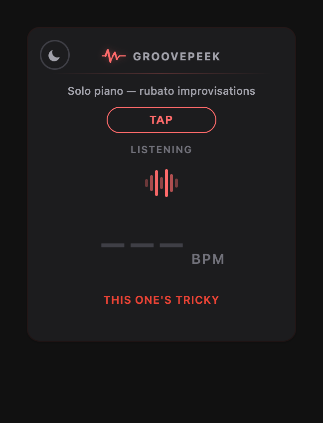
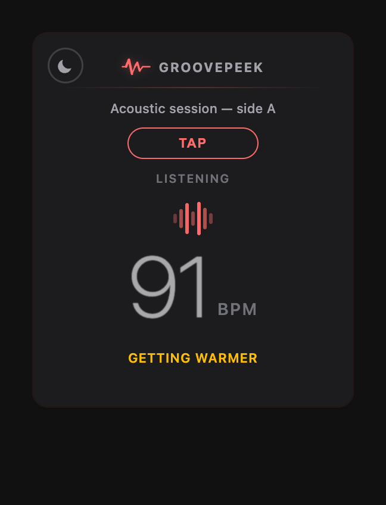
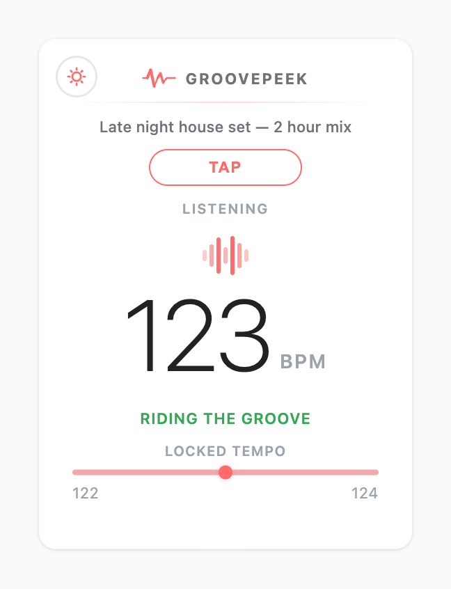

Everything you need,
nothing you don't
Play a song on YouTube, YouTube Music, or Spotify. Click the extension. See the tempo — no setup, no configuration.
Every reading carries a plain-language confidence label, and the number itself fades and softens while GroovePeek is still unsure. Once enough confident readings accumulate, a range bar shows the spread they cover and where the tempo sits right now.
The waveform animation syncs live to the detected tempo — a visual heartbeat of the song, handy for DJs, producers, and dancers.
Not sure about the reading? Tap along with the beat and get your own manual measurement side by side.
You can see
how sure it is




Tempo drifts.
So it keeps listening.
A recording's tuning is fixed the moment it's cut, but its tempo isn't — live players push and pull, and a DJ set moves between tracks. So GroovePeek re-analyses the last stretch of audio every couple of seconds rather than settling on one answer and stopping. The range bar is the visible side of that: it spans the confident readings taken so far, and the marker sits at the current one.
It depends almost entirely on the material. Steady music with audible percussion is the easy case: GroovePeek usually has a correct reading within about ten seconds of the beat becoming audible, and holds it — longer on a track that opens with a quiet or free-time intro. Across the full-length tracks in its test set, roughly three in four of the readings it chose to display landed within a few BPM of the true tempo.
Free-tempo playing is the hard case. On rubato piano, slow ballads and sparse recordings it will often show a dash for long stretches — and where it does commit, it can be wrong. The characteristic error is an octave: half or double the real tempo, which happens when a busy guitar or a strong off-beat looks more periodic than the beat itself. If a reading looks like exactly half or twice what you're hearing, that's the one to distrust.
That's what Tap Tempo is there for. Tap along for a few beats and you get an independent number beside GroovePeek's, which settles the question faster than staring at the confidence label.
Made for anyone
who feels the beat
Quickly identify the BPM of any track before adding it to a set or sampling it in a project.
Pin down the exact tempo of a song before building a routine around it.
Match your practice metronome to a reference track without leaving the browser.
Because sometimes you just want to know how fast that song goes.
Your privacy, protected
GroovePeek works entirely inside your browser. It never records your audio, never sends data to any server, and never tracks anything about you or your listening habits. The only thing it remembers locally is whether you prefer light or dark mode.
Read the full privacy policy →What's this beat?
Install GroovePeek and find out in seconds.
Add to Chrome — it's freeCurious what it's tuned to, as well? Meet PitchPeek →